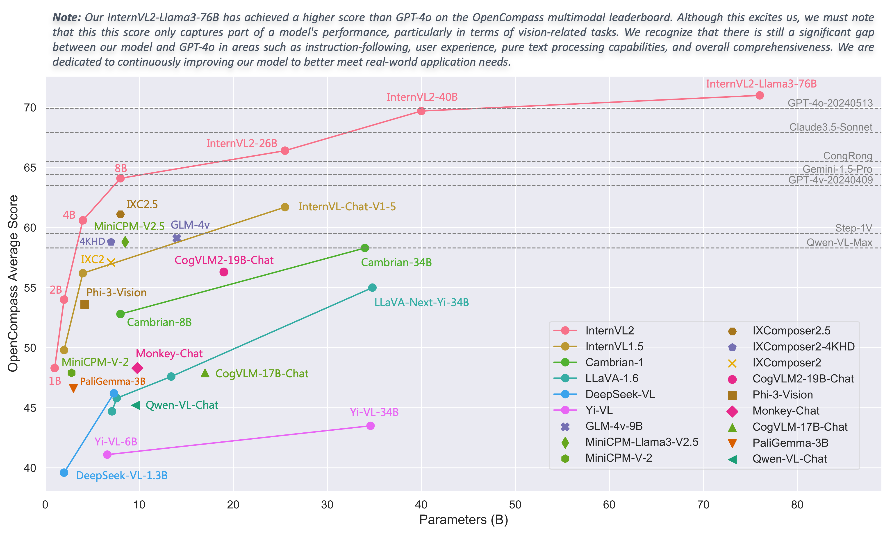
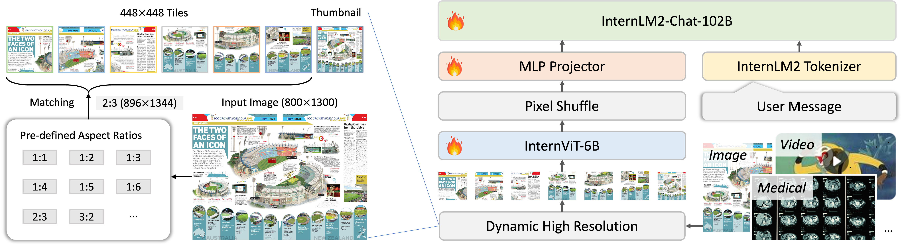

Introduction of InternVL2 Series#
We are excited to announce the release of InternVL 2.0, the latest addition to the InternVL series of multimodal large language models. InternVL 2.0 features a variety of instruction-tuned models, ranging from 1 billion to 108 billion parameters.

Compared to the state-of-the-art open-source multimodal large language models, InternVL 2.0 surpasses most open-source models. It demonstrates competitive performance on par with proprietary commercial models across various capabilities, including document and chart comprehension, infographics QA, scene text understanding and OCR tasks, scientific and mathematical problem solving, as well as cultural understanding and integrated multimodal capabilities.
InternVL 2.0 is trained with an 8k context window and utilizes training data consisting of long texts, multiple images, medical data, and videos, significantly improving its ability to handle these types of inputs compared to InternVL 1.5. For more details, please refer to our blog and GitHub.

As shown in this figure, InternVL2 utilizes the same architecture as InternVL 1.5, specifically the ViT-MLP-LLM configuration referenced in various existing studies.
For the various sizes of the InternVL2 model, we employed different visual encoders and large language models, as detailed in the table below.
Model Name |
Vision Part |
Language Part |
HF Link |
MS Link |
|---|---|---|---|---|
InternVL2‑1B |
||||
InternVL2‑2B |
||||
InternVL2‑4B |
||||
InternVL2‑8B |
||||
InternVL2‑26B |
||||
InternVL2‑40B |
||||
InternVL2-Llama3-76B |
During training, we implemented a dynamic resolution strategy, dividing images into tiles of 448 × 448 pixels in sizes ranging from 1 to 12, based on the aspect ratio and resolution of the input images. During testing, this can be zero-shot scaled up to 40 tiles (i.e., 4K resolution). To enhance scalability for high resolution, we simply employed a pixel shuffle (unshuffle) operation to reduce the number of visual tokens to one-quarter of the original. Therefore, in our model, a 448 × 448 image is represented by 256 visual tokens.
Performance#
Image Benchmarks#
Benchmark |
GPT-4o-20240513 |
Claude3.5-Sonnet |
InternVL2-40B |
InternVL2-Llama3-76B |
|---|---|---|---|---|
Model Size |
- |
- |
40B |
76B |
DocVQAtest |
92.8 |
95.2 |
93.9 |
94.1 |
ChartQAtest |
85.7 |
90.8 |
86.2 |
88.4 |
InfoVQAtest |
- |
- |
78.7 |
82.0 |
TextVQAval |
- |
- |
83.0 |
84.4 |
OCRBench |
736 |
788 |
837 |
839 |
MMEsum |
2328.7 |
1920.0 |
2315.0 |
2414.7 |
RealWorldQA |
75.4 |
60.1 |
71.8 |
72.2 |
AI2Dtest |
94.2 |
94.7 |
87.1 |
87.6 |
MMMUval |
69.1 / 69.2 |
68.3 / 65.9 |
53.9 / 55.2 |
55.2 / 58.2 |
MMBench-ENtest |
83.4 |
79.7 |
86.8 |
86.5 |
MMBench-CNtest |
82.1 |
80.7 |
86.5 |
86.3 |
CCBenchdev |
71.2 |
54.1 |
80.6 |
81.0 |
MMVetGPT-4-0613 |
- |
- |
68.5 |
69.8 |
MMVetGPT-4-Turbo |
69.1 |
66.0 |
65.5 |
65.7 |
SEED-Image |
77.1 |
- |
78.2 |
78.2 |
HallBenchavg |
55.0 |
49.9 |
56.9 |
55.2 |
MathVistatestmini |
63.8 |
67.7 |
63.7 |
65.5 |
OpenCompassavg |
69.9 |
67.9 |
69.7 |
71.0 |
We simultaneously use InternVL and VLMEvalKit repositories for model evaluation. Specifically, the results reported for DocVQA, ChartQA, InfoVQA, TextVQA, MME, AI2D, MMBench, CCBench, MMVet, and SEED-Image were tested using the InternVL repository. OCRBench, RealWorldQA, HallBench, and MathVista were evaluated using the VLMEvalKit.
For MMMU, we report both the original scores (left side: evaluated using the InternVL codebase for InternVL series models, and sourced from technical reports or webpages for other models) and the VLMEvalKit scores (right side: collected from the OpenCompass leaderboard).
Please note that evaluating the same model using different testing toolkits like InternVL and VLMEvalKit can result in slight differences, which is normal. Updates to code versions and variations in environment and hardware can also cause minor discrepancies in results.
Video Benchmarks#
Benchmark |
GPT-4o |
GPT-4V |
Gemini-Pro-1.5 |
InternVL2-40B |
InternVL2-Llama3-76B |
|---|---|---|---|---|---|
Model Size |
- |
- |
- |
40B |
76B |
MVBench |
- |
- |
- |
72.5 |
69.6 |
MMBench-Video8f |
1.62 |
1.53 |
1.30 |
1.32 |
1.37 |
MMBench-Video16f |
1.86 |
1.68 |
1.60 |
1.45 |
1.52 |
Video-MME |
71.9 |
59.9 |
75.0 |
61.2 |
61.2 |
Video-MME |
77.2 |
63.3 |
81.3 |
62.4 |
62.8 |
We evaluate our models on MVBench and Video-MME by extracting 16 frames from each video, and each frame was resized to a 448x448 image.
Grounding Benchmarks#
Model |
avg. |
RefCOCO |
RefCOCO |
RefCOCO |
RefCOCO+ |
RefCOCO+ |
RefCOCO+ |
RefCOCO‑g |
RefCOCO‑g |
|---|---|---|---|---|---|---|---|---|---|
UNINEXT-H |
88.9 |
92.6 |
94.3 |
91.5 |
85.2 |
89.6 |
79.8 |
88.7 |
89.4 |
Mini-InternVL- |
75.8 |
80.7 |
86.7 |
72.9 |
72.5 |
82.3 |
60.8 |
75.6 |
74.9 |
Mini-InternVL- |
84.4 |
88.0 |
91.4 |
83.5 |
81.5 |
87.4 |
73.8 |
84.7 |
84.6 |
InternVL‑Chat‑V1‑5 |
88.8 |
91.4 |
93.7 |
87.1 |
87.0 |
92.3 |
80.9 |
88.5 |
89.3 |
InternVL2‑1B |
79.9 |
83.6 |
88.7 |
79.8 |
76.0 |
83.6 |
67.7 |
80.2 |
79.9 |
InternVL2‑2B |
77.7 |
82.3 |
88.2 |
75.9 |
73.5 |
82.8 |
63.3 |
77.6 |
78.3 |
InternVL2‑4B |
84.4 |
88.5 |
91.2 |
83.9 |
81.2 |
87.2 |
73.8 |
84.6 |
84.6 |
InternVL2‑8B |
82.9 |
87.1 |
91.1 |
80.7 |
79.8 |
87.9 |
71.4 |
82.7 |
82.7 |
InternVL2‑26B |
88.5 |
91.2 |
93.3 |
87.4 |
86.8 |
91.0 |
81.2 |
88.5 |
88.6 |
InternVL2‑40B |
90.3 |
93.0 |
94.7 |
89.2 |
88.5 |
92.8 |
83.6 |
90.3 |
90.6 |
InternVL2- |
90.0 |
92.2 |
94.8 |
88.4 |
88.8 |
93.1 |
82.8 |
89.5 |
90.3 |
We use the following prompt to evaluate InternVL’s grounding ability:
Please provide the bounding box coordinates of the region this sentence describes: <ref>{}</ref>